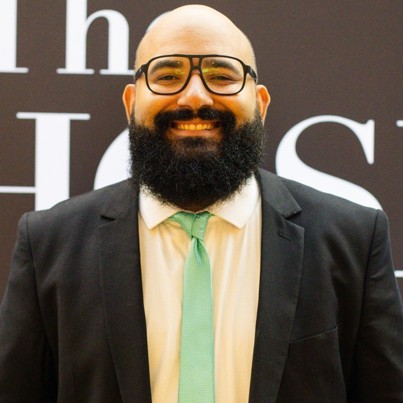

Matheus Horácio
Gerente de Conteúdo e Social Media de
The Chosen Brasil
.
Instagram
LinkedIn
YouTube
Na mídia
🎙️ Entrevista 1 — Santo Café
🎥 Entrevista 2 — The Chosen Brasil
📺 Entrevista 3 — Bastidores & Propósito